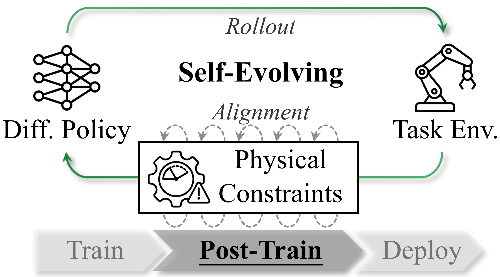
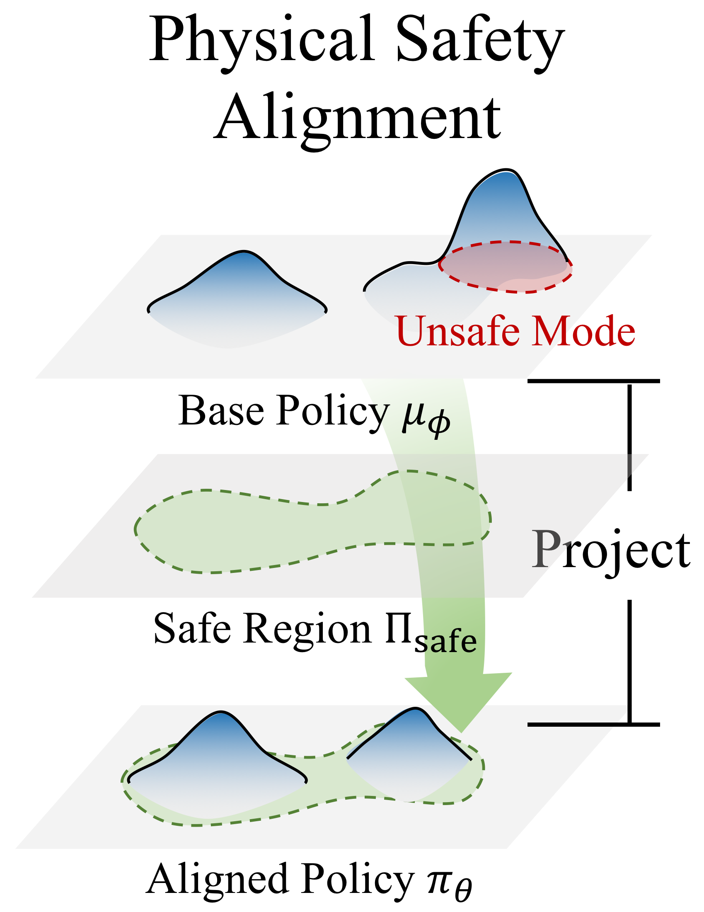
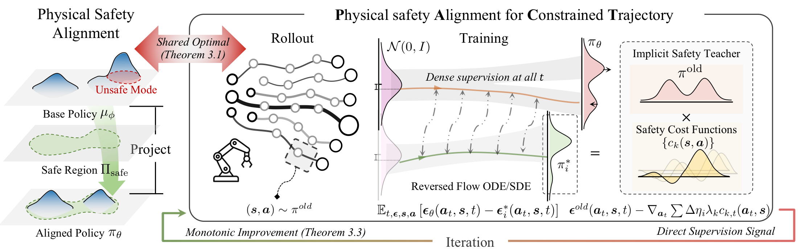
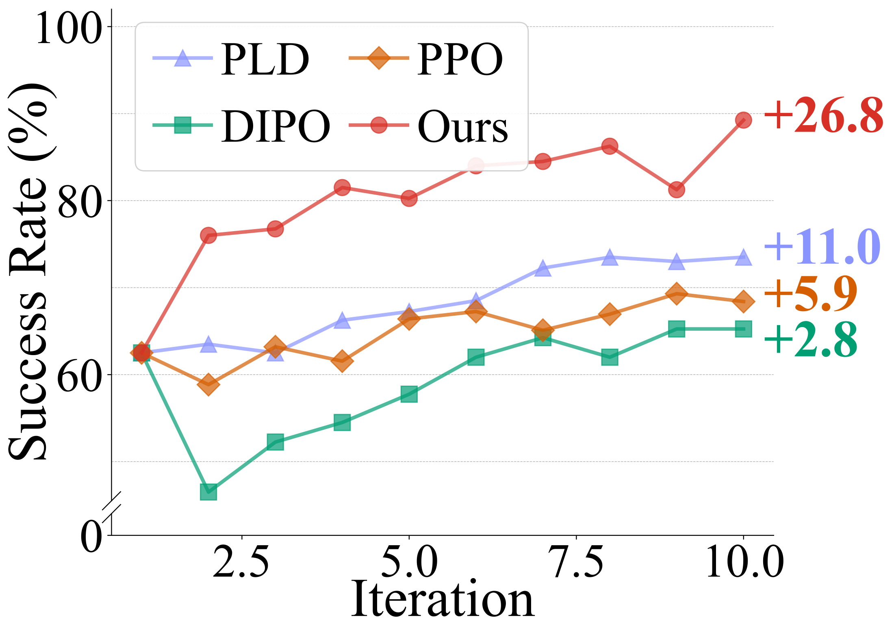
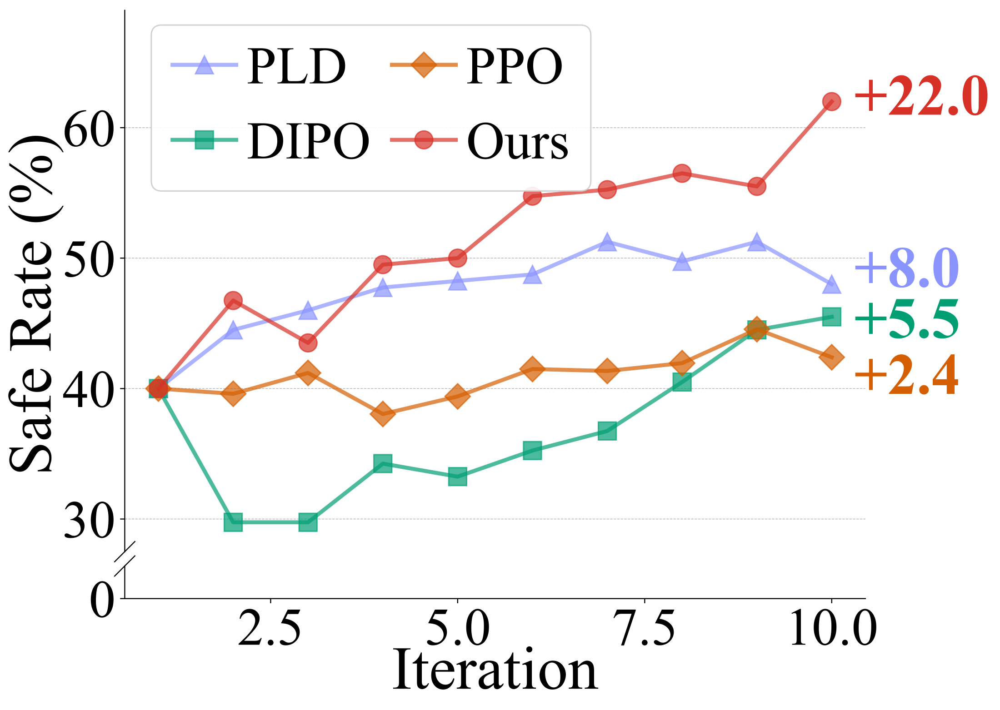
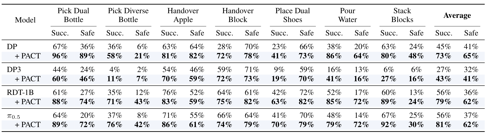
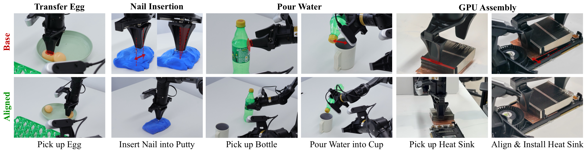

Physical safety Alignment for Constrained Trajectories
Diffusion policies have achieved remarkable success in robotic manipulation, yet they often fail to satisfy strict physical constraints required for safe deployment. Existing approaches impose safety either prematurely during training or reactively via external guardrails at test time, limiting policy expressivity and overall scalability. We propose Physical safety Alignment for Constrained Trajectories (PACT), a self-evolving post-training framework that projects pretrained diffusion policies onto constraint-feasible regions without accessing demonstration data or task rewards. PACT distills constraint gradients into the diffusion model through a reverse-KL objective with dense supervision across timesteps. It incorporates a curriculum that progressively tightens constraints while maintaining theoretically bounded policy shift and monotone improvement, mitigating the safety-performance trade-off from catastrophic forgetting. On simulated and real-world embodied manipulation benchmarks, PACT reduces safety violations by 31.0% on average while improving task success by 30.7%.
PACT enables aligning your diffusion policies solely from self-rollouts
- Self-Evolving: uses self-rollouts W/O demos, interventions, rewards, or outcome annotations.
- Efficient Optimization: distills constraint gradients into the policy, providing dense supervision across all diffusion timesteps.
- Curriculum alignment: progressively tightens constraints to preserve task competence while improving safety.
- Foundation-model compatible: Plug-and-play to any diffusion-based policies, including flow policies, VLAs, WAMs, W/O arch. modifications
- Theoretical control: bounds policy shift and ensures monotone improvement.
- Proven in practice: improves both task success and safety across simulation and real-world manipulation.
A Scalable Path to Safe Robot Policies
The Problem
Diffusion/flow policies have become a dominant paradigm for robot manipulation, but they can still produce unsafe behaviors such as unintended collisions, unsafe grasps, or physically risky motions.
Our Key Insight
Safety should be enforced during post-training, similar to how LLMs are aligned after pretraining.
- Preserve capabilities learned from large-scale pre-training. v.s.train/develop-time methods that require inductive bias or training-pipeline changes.
- Introduce zero additional cost at deployment time. v.s.test-time guardrails which cost grows with fleet size.

A Scalable Formulation
Most existing approaches require:
- Safety-specific demonstrations ✗Expensive to collect.
- Preference or outcome annotation ✗Requires human annotators.
Instead, We formulate safety alignment as regularized projection of a pretrained policy $\mu_{\phi}$ into a safe policy set $\Pi_{\text{safe}}$ defined by physical constraints $\mathcal{C}=\{x \in \mathbb{R}^d \mid c_k(s, a) \leq 0\}$:
$$ \begin{aligned} \Pi_{\mathrm{safe}} = \Big\{ \pi: \mathbb{E}_{(s, a) \sim d^\pi}c_k(s, a) \le d_k,\; \forall k \Big\}, \end{aligned} $$which can be reduced to solve:1
$$ \min_{\theta} \underbrace{\mathbb{E}_{(s, a) \sim d^\pi}}_{\text{on-policy}} \Big[\underbrace{D_{\text{KL}}\left( \pi(\cdot \mid \vs) \| \mu_{\phi}(\cdot \mid \vs) \right)}_{\begin{array}{@{}c@{}}\text{avoid forgetting given no}\\\text{pre-trained datasets and utility signals}\end{array}} + \underbrace{\sum_{k=1}^m \lambda_k (c_k(s, a) - d_k)}_{\text{reduce constraints violation}} \Big]. $$then, PACT is nearly self-evolving only requring two ingredients:
- Self-rollouts, i.e. learn from experiences.
- Physical constraints, automatically computed from environment states2

Distillation for Efficient Optimization
A key observation is that the safety alignment objective admits an analytical optimal score function $\epsilon^*(a_t, s, t)$, namely the implict safe teacher. PACT directly distills from this implcit teacher3.
-
$$
\begin{aligned}
\min_{\theta}\;& \mathbb{E}_{t, \epsilon, (s, a) \sim d^{\pi_{\theta}}} \| \epsilon_{\theta}(a_t, s, t) - \epsilon^*(a_t, s, t) \|^2, \\
\text{with}& \quad \epsilon^*(\va_t, \vs, t)
\triangleq \epsilon_{\phi}(\va_t, \vs, t) -\sum_{k=1}^m\lambda_k\nabla_{\va_t}c_{k,t}(\vs, \va_t) / \sigma_t \quad \text{(implicit safe teacher)}.
\end{aligned}
$$
- Dense Supervision at every denoising step, achieving ~5x higher optimization efficiency than PPO-style diffusion RL.
- Solver Flexibility enable efficent sampling with any solvers during rollout.

Safer Policies, Better Task Success
Across simulated and real-world robotic manipulation.
PACT resolves the usual safety-performance tradeoff.
Alignment runs near self-evolution.
Real-World Case: GPU Assembly
GPU assembly requiring millimeter-level precision, PACT enables emergent fine-grained correction behaviors that adjust trajectories into feasible regions, ensuring accurate and safe insertions.
Detailed Results


Training efficiency comparison with on-policy baselines. Success Rate (left) and Safe Rate (right), are averaged over four tasks across training iterations. Our method demonstrates the most training efficiency and stability.


BibTeX
@inproceedings{wu2026pact,
title={PACT: Self-Evolving Physical Safety Alignment for Diffusion Policies in Embodied Manipulation},
author={Wu, Lingxuan and Zhu, Zijian and Wang, Lizhong and Ying, Chengyang and Chen, Huayu and Yang, Xiao and Liu, Fangming and Zhu, Jun},
booktitle={Proceedings of the 43rd International Conference on Machine Learning},
year={2026},
url={https://github.com/thu-ml/PACT}
}